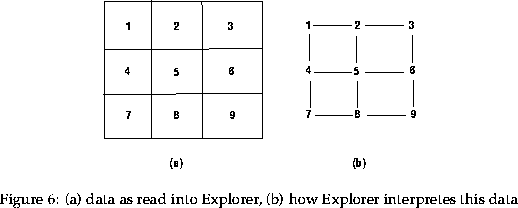

Next: 6.7.2 Modifying maps -
Up: 6.7 Using the maps
Previous: 6.7 Using the maps
When interpreting the images created in Explorer the user should be aware of
the following:
- Explorer blends colours between data values
- for contours and isosurfaces (3-D contours) the data will
be interpolated
- the data used to create images is placed at the vertices
of the grid, not the centre (see figure 6).
This can be a nusaince, and can be eliminated by producing four copies
of the data values, giving two horizontally and two vertically.
